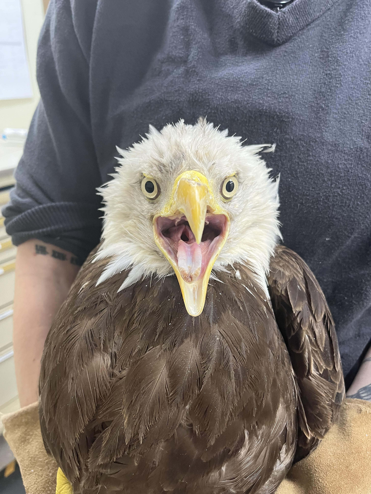
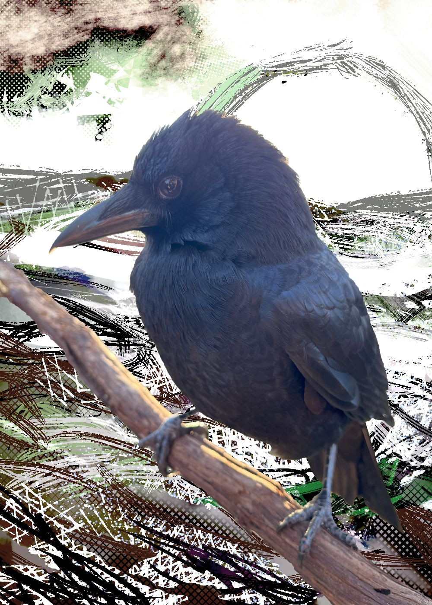

Permission to bird!
This is BIG news, y'all. I've been a huge fan of the World Bird Sanctuary, and ever since deciding upon putting a crow and a bald eagle in my game, I've known that I want to utilize the visages of their birds within. I don't talk about it much, but I'm huge into birds. And my favorite bald eagle currently is Bald Eagle 24-390. He suffers from a gunshot wound to his beak, and has been in WBS care since mid-last year. And, the beautiful thing, he's experiencing keratin growth.

My favorite photo of 24-390, taken by World Bird Sanctuary.
The news: I've recieved permission from World Bird Sanctuary and photographer Stu Goz to use three photos of Bald Eagle 24-390 within the game, as well as a photo of Aesop the crow, who I also adore. I want thank those at World Bird Sanctuary as well as Stu Goz greatly for this gracious opportunity. And... I want to show off the in-game portraits for the bald eagle and crow below.


Bald Eagle 24-390 and Aesop the crow, framed Darknessian. Backgrounds by Lambchopper.
5/16/25 1:46:24 AM CST